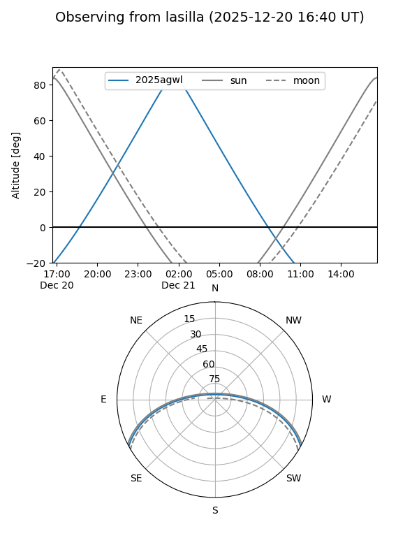
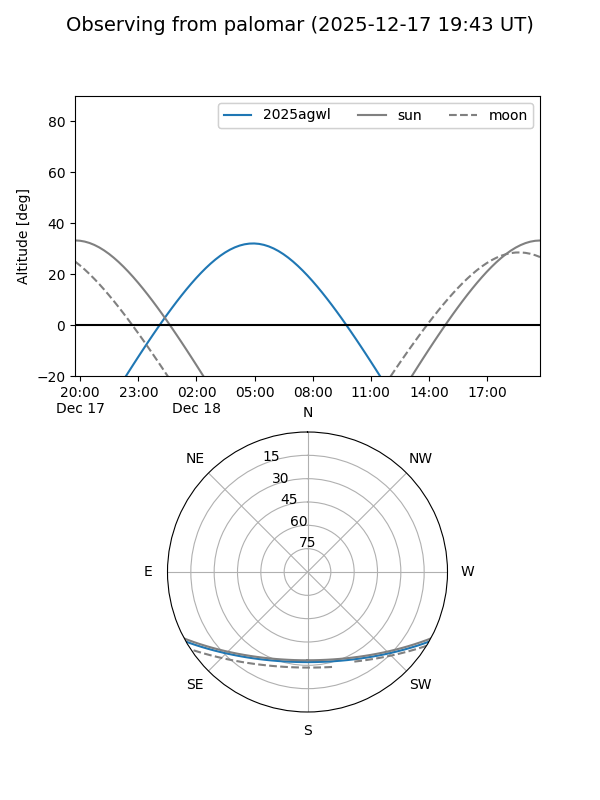

2025agwl
Target 2025agwl at 2025-12-18 11:18
Aliases and brokers:
FINK: fink-portal.org/ZTF25acgjaxa
Lasair: lasair-ztf.lsst.ac.uk/objects/ZTF25acgjaxa
ALeRCE: alerce.online/object/ZTF25acgjaxa
TNS: wis-tns.org/object/2025agwl
YSE: ziggy.ucolick.org/yse/transient_detail/2025agwl
alt names
ZTF25acgjaxa (ztf,fink_ztf)
2025agwl (tns,yse)
PS25ioq (panstarrs)
Coordinates:
equatorial (ra, dec) = 43.6563,-24.67483
equatorial (HMS+DMS) = 02:54:37.52,-24:40:29.40
galactic (l, b) = (214.8549,-62.25688)
Photometry
last ztfg=19.60, ztfr=19.33
2 ztfg, 1 ztfr detections
Lightcurve

Visibility


Additional plots